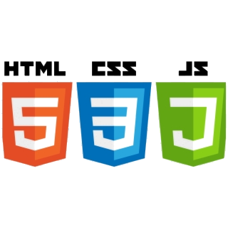

Joshua Chadwick
Current Sophomore at Washington State University studying Computer Science, minoring in Entrepreneurship and German
Experience
Since age 12, I've dabbled in many coding languages for various different projects to test and expand upon my knowledge. Here are some of my most practiced languages and the applications in which I've implimented them! (Everything I list can be found on my GitHub)
 |
 |
 |
Interested in my?
Python
I've used Python in most of my projects to date. It's what really got me into learning the importance of data structures, and it acted as a gateway to my fascination with Machine Learning. I've used Python in making simple games like Rock, Paper, Scissors, all the way into projects with AI and machine learning such as inferencing a YOLOv5 model for object detection, using Logistic Regression to find trends in house pricing with a mock dataset.
Java
Java was what started it all for me. As a 12 year old kid, I wanted to know what made the popular game, Minecraft, tick. I also wanted to know how I could modify it, because I knew that if you can make something on a computer, you should be able to modify it. My parents bought me a class onine and off I went learning Object-Oriented Programming at age 12! If I had the code to my first Minecraft mod, I would link it on my GitHub but unfortunately it has been lost to time.
HTML, CSS, and JavaScript
My interests in Web Development go back to when I was 14 years old and wanted to make a new website for my mom's business. I love being creative and doing things by myself without the aid of some website-builder, so I took some classes and got to know HTML and CSS quite well!
Prime Example: This Website!
Contact
If you wish to contact me for any business inquiries, please use my personal email or phone number!
Email: jchadwick423@gmail.com
Phone: (360) 783-2228